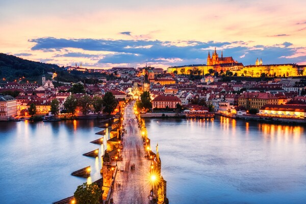

네덜란드
네덜란드는 서유럽에 위치한 나라로, 풍차와 튤립, 운하가 아름다운 풍경으로 유명하다. 수도는 암스테르담이며, 총 면적은 4만 1000제곱킬러미터로 작은 나라이지만 인구수는 1790만명으로 생각보다 인구수가 많다.

쾨켄호프 튤립 축제
쾨켄호프 튤립축제는 매년 수작업으로 심은 700만 개의 구근이 봄이 되어 일제히 피어나는 진풍경을 볼 수 있는 축제입니다. 튤립 뿐 아니라 히아신스, 수선화 등 다양한 봄꽃들을 볼 수 있습니다. 주로 3월 중순에서 5월 중순까지 열리며 튤립이 피는 4월이 특히 아름답습니다.
킹스데이
킹스데이는 국왕 생일을 기념하는 날로, 도시가 프리마켓과 주황색 테마 행사로 활기차게 변하는 문화 축제입니다. 또한 거리 퍼레이드와 라이브 음악, 댄스 파티, 보트 퍼레이드 등 다양한 즐길 거리가 있습니다.